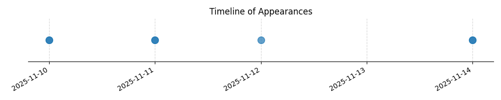

Kategorie: Letecké předpisy
Tato otázka se týká odpovědnosti velitele letadla za dodržování pravidel provozu, což je klíčový aspekt leteckých předpisů. Odpověď B správně uvádí, že velitel letadla nese konečnou odpovědnost za daný let a jeho soulad s pravidly létání, s výjimkou nezbytných odchylek v zájmu bezpečnosti. Toto je v souladu s obecnými principy leteckých předpisů, které kladou primární odpovědnost na velitele letadla.

| Datum výskytu |
|---|
| 2025-11-14 |
| 2025-11-12 |
| 2025-11-11 |
| 2025-11-10 |